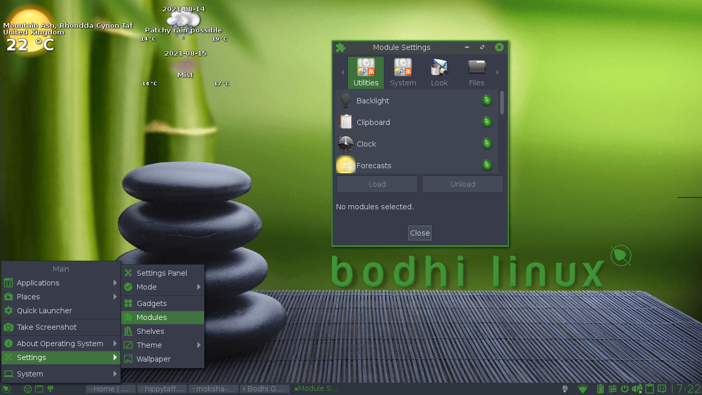

The Bodhi Guide to Moksha
Modules
This page explains in some detail:
- What Modules are.
- How they are related to Gadgets.
- How to load Modules from disk storage.
- How to find Modules in the Bodhi Linux
repository.
What is a Module?
A Module is a small program that can be used to extend the functionality of your desktop. They can be installed and loaded into RAM at runtime. By not loading all its Modules by default, minimizes the amount of RAM being used at any given time. The more Modules you load, the more RAM will be occupied. On PCs with 512 MB of RAM or less, this is an important consideration. But due to the efficiency of the Enlightenment Foundation Libraries (EFL), each Module takes up very little additional memory. Many Modules, once loaded into RAM, provide access to Gadgets that can be placed on the desktop or on a Shelf.
How to load Modules
Go to Menu -> Settings -> Modules and the Module
Settings dialogue appears:

Notice the tabs at the top. There are Modules for Utilities, System, Look and so on. In the screenshot above, modules all have a green light to its right. This is the indicator (other Profiles may have different indicators), meaning it is loaded. There is a brief description of what the Module does in the window at the bottom. You have the option of unloading it to save memory or reduce the clutter on your desktop. The scrollbar at the right lets you scroll down the list to see other Modules on the disk and their status - either loaded into RAM or ready to be installed, but not loaded.
Modules and Gadgets
Many of the Modules provide Gadgets that can be added to your desktop or on a Shelf. Several Modules exist to only provide a single Gadget such as Clock. Typically, it's not enough to load a Module into RAM, because Moksha lets you choose where to display a loaded Module's Gadgets. Please see the Gadgets and/or the Shelves section for details on placing a Gadget in one or the other location.
Installed Modules
| Module | Description |
| Places | Manages the volumes device attached to the system. |
| Systray | A system tray that holds application's icons. |
| Tasks | Enables the switching of tasks. |
| Clipboard | Clipboard manager. (for copy and paste) |
| Battery | Battery monitor. |
| Gadman | Container for gadgets. |
| Mixer | Sound control. (Volume etc) |
| Window Remembers | Remembers where you want your windows to open next time you open them. |
| Interaction | Configures mouse and touchpad input. |
| Window Manipulation | Configures window Raise, Resistance and Maximize settings. |
| Theme | Configures Theme preferences. |
| Shelves | Shelf configuration. |
| Performance | Configures performance related items such as frame rates and cache settings . |
| Edge Bindings | Configure edge bindings. |
| Paths | Module to search directories. |
| Menu settings | Configures menu behavior. |
| Keybindings | Set key bindings (keyboard shortcuts) |
| Language | Select language. |
| Display | |
| Dialogs | Configure default dialog properties. |
| Applications | Allows configuration of Ibar, Restart and startup applications. |
| Fileman | File management |
Downloading Modules
Many Modules, such as Forecasts, are not included in the Bodhi Linux Standard iso in order to keep it within size limits, in accordance with the Bodhi Linux minimalist philosophy. Modules that are not installed by default can be found in the Bodhi Linux software repository via Synaptic Package Manger in Main Menu -> Applications -> System Tools. They can be installed like any other Linux program.
For a complete list of available Modules see the Module Reference.
Deleting a Module
Because of the nature of Modules it is not strictly necessary to delete/uninstall them. As long as they are not loaded they will not be using any system resources (RAM for example) and only a small amount of disk space.
If you do find it necessary to completely remove one (or more) however, simply uninstall it in Synaptic Package Manager like any other other application or use the command:
sudo apt remove [module-name]
| Prev: | Contents: | Next: |
| Virtual Desktops | Index | Module Reference |